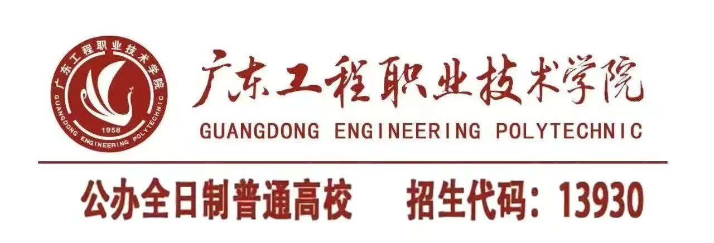

学校简介
广东工程职业技术学院是广东省教育厅直属的一所以工科专业为主，文、经、管、艺术专业协调发展的高职院校，其前身是创建于1958年的广东省业余科技大学，2005年转制为高职院校。学校坚持社会主义办学方向，坚持立德树人根本任务，坚持"以高素质为灵魂，以高技术技能为核心，以高质量就业为导向，政校行企全方位融合，全面服务区域经济社会发展"的办学理念，突出特色发展、创新发展，取得显著的成绩。
学校现占地1139.63亩（广州、清远两校区），新生报到后全日制在校生13982人，成人专科生2228人，实践场所10.24万平方米，校内外实践基地228个（中央财政支持实训基地3个，省财政支持实训基地11个），纸质图书86.29万册。现有教职工607人，其中，专任教师525人，高级职称教师159人。设有机电工程学院（电梯工程学院合署）、建筑工程学院、信息工程学院、管理工程学院、财经学院、人文艺术学院、人工智能学院、公共服务学院等8个教学单位，开设45个专业。目前学校重点建设并形成了电梯工程技术、建筑工程技术等省级示范建设专业和软件技术省品牌专业、建筑设计省重点专业等。其中，电子信息工程技术、建筑工程技术、软件技术被教育厅批准为高职本科协同育人应用型本科人才培养专业。学校坚持以服务为宗旨，以就业为导向，近五年来毕业生总体就业率保持在99%以上。
学校是省示范性高职院校、教育部现代学徒制试点高校、专本对接应用型人才培养试点高职院校、全国大学生创业示范基地建设单位、省大学生创新创业教育示范学校、省高校思想政治理论课示范建设单位、省培育和践行社会主义核心价值观示范点，荣获教育部"全国毕业生就业工作典型经验高校"、"广东省文明单位"等荣誉称号。学校全面加强党的建设和思想政治教育工作，建立全省高职院校首家马克思主义学院。原全国人大副委员长韩启德、原中国科协党组书记邓楠、原广东省省长朱小丹等领导先后来校视察，对学校的快速发展给予了高度评价。
学校大力推动政校行企协同创新，与迅达（中国）电梯有限公司、广东海外建设集团公司等国内外知名企业建立深度合作关系，形成"校企双主体、工学六合一"，"8双4一"现代学徒制等特色鲜明的人才培养模式，努力构建高水平人才培养体系。与迅达（中国）电梯公司合作，在全国率先校企共建电梯技术专业和电梯工程学院；与广州建筑集团等合作，在校内共建广东工程建筑信息模型应用技术研究与开发（BIM）中心，走在全国前列；与广州市茂名商会、广东万讯网农业股份有限公司深度合作，创立"万讯创新创业研究中心"、"万讯商学院"，共建"广东工程•万讯创新创业学院"，致力于培养企业合伙人；经省教育厅批复，我校在湛江财贸中等专业学校、湛江机电学校设置高职专业学院，为中职毕业生提供升学渠道。
"十三五"期间，学校将高举习近平新时代中国特色社会主义思想伟大旗帜，坚持内涵式、精品化、特色化、高端化、国际化的发展策略，以机制创新为引领，以示范性高职院校建设和"创新强校工程"建设为抓手，大力实施"专业、课程、队伍、平台"质量工程，加快推进清远校区建设，为广东实现习近平总书记提出的"四个走在全国前列"的目标培养更多的高素质技术技能人才，努力办成人民满意、工科特色鲜明、省内一流、国内有影响力的高职院校，争当广东省高职教育的排头兵。
- 学校代码：13930
- 办学层次：专科（高职）
- 办学性质：公办普通高等职业院校
- 学校地址：广东省广州市天河区渔兴路18号